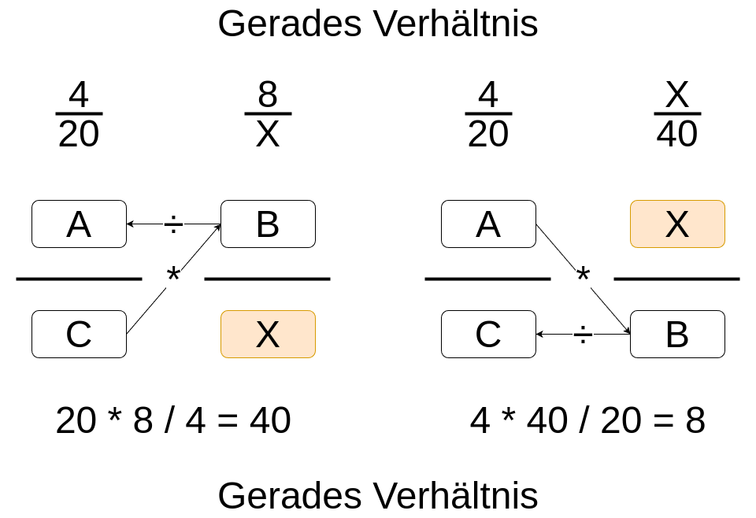
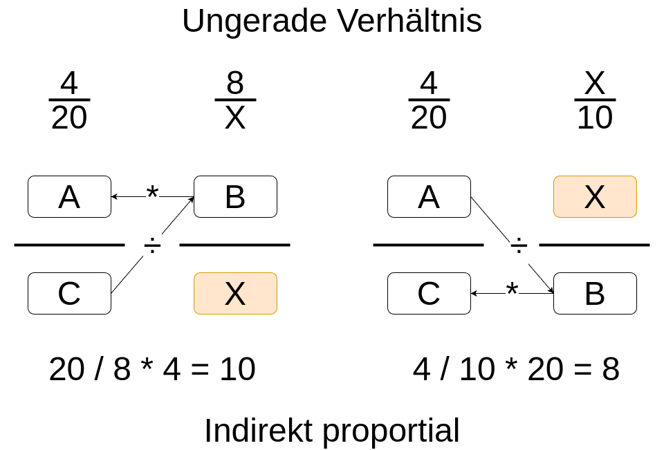

Kaufmännisches Rechnen
Ein Dreisatz ist eine Methode, um Werte in Verhältnissen zu berechnen. Wenn du weißt, wie zwei Werte miteinander verbunden sind, kannst du mithilfe des Dreisatzes andere Werte berechnen.
Beispiel: Wenn ein IT-System 4 Stunden benötigt, um 200 Dateien zu verarbeiten, wie lange dauert es, 500 Dateien zu verarbeiten?
Manchmal müssen größere oder kleinere Mengen berechnet werden. Das Verhältnis bleibt jedoch immer proportional. D. h. wenn ein Wert auf einer Seite der Rechnung größer wird, wird er auch auf der anderen Seite im gleichen Maß größer. Umgekehrt wird der Wert auf der anderen Seite der Rechnung kleiner, wenn der auf der anderen Seite kleiner wird.

Wenn ein IT-Dienstleister 3 Mitarbeiter benötigt, um 15 Server in einer Woche zu warten, wie viele Mitarbeiter sind notwendig, um 30 Server in derselben Zeit zu warten?
Ein ungerades Verhältnis, auch indirekt proportional genannt, bedeutet, dass eine Größe abnimmt, während eine andere zunimmt. Das Produkt der beiden Größen bleibt konstant.

Ein IT-Unternehmen hat einen festen Arbeitsaufwand für ein Projekt. Wenn 5 Entwickler 20 Tage benötigen, um das Projekt abzuschließen, wie viele Tage würden 10 Entwickler benötigen?
Erklärung: Da der Gesamtarbeitsaufwand konstant bleibt, führt eine Verdopplung der Anzahl der Entwickler zu einer Halbierung der benötigten Zeit. Dies ist ein Beispiel für ein indirekt proportionales Verhältnis.